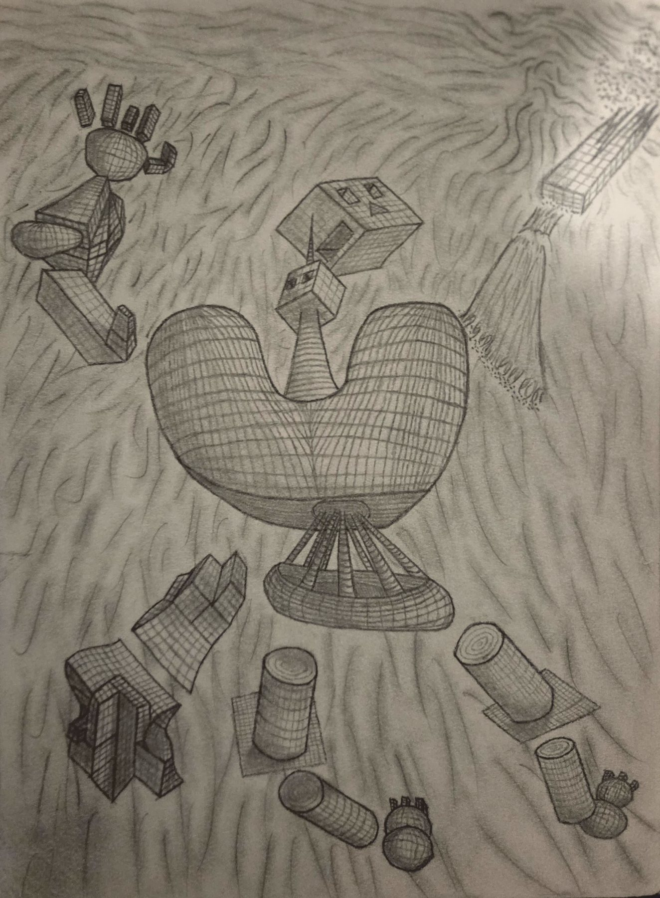

Neo—mania introverted; thoughts spinning fast in quicksand of itself, already arriving at the abstract. Dreamy like the scaffoldings of Godly fabrics and curtains hiding machinery. The childlike magic is revealing itself through the computer filled with vessel pumps staring, the ball sight bulging plumply like glass, where the world is falling out of the head at the view of an air vent at the top of a wall. The mountain wall is too far to be reached, and the chairs too small. Every step towards somewhere makes stiff wobbles of claymation imitating distant ideas of one way of movement, so they stop trying the bi—pedal stomp stretch, but learn to crawl, both like a spider and a snake. Eventually, it becomes like pretzel-made twists of limbs throwing knots around itself, lost in its arms and legs.
The simple structure of purple blob glitch stretches around itself through each black-and-white tile, and they grow longer, fast. Tumbling through the flats at the slowest speed, but large feeling as a goliath who swallows stars. The stretch is long, but the will to reach the other side is longer. The bot square is rounding itself with thoughts of symbols of its own mechanics, a builder unraveling.
It is done, the bridge. It is built like a doorway; it must be overcome. The self—thud is beating the cranial-like ball against wood made of ouch. The ouch is the only way. The jester machines, in their orange and blue, they play little flutes of encouragement. The goliath now has a way, and he beats his head harder to overcome the door bridge, which refuses simple carry. Eventually, the door kneels, and the box—bot mounts, and he rides it to the other side, where wet finds its way out of the computer’s sphere place somewhere.
With the accomplishment made, the other side now…? The square is purple. Electricity spurs the computer a little harder, and now it is clear. It is clear now. The square is…? That is an awfully long hallway. Oh, wait, there are five squares now. I see. There is a square up there, one down there, two on my left and right, and one really far away. That is the furthest away square I have ever seen. There? The squares stretch and change in shape at each picture; there is a watcher happening to it, having it known.
I find the railroad mighty long. Yep… Any minute now. This is… pretty long. Yeah, definitely. Yeah.
There it is. The unsymbolized droddle bottle flopeing it’s fleebing florble at me, and I thodge my smorelianitude filarentropy folumenitly srealienker… WhaT? howW DOeS thI s mak e any hf seense ee .
The ballazuubomawilpartmetiouslyssorperrlentuhapthrinfounlaqf
There are words reading a reader like an analogy on drugs. Oh wait… That is my analogy? No, I am that word over there reading a read like an analogy on drugs… Wait, that can’t be right, because I that word o ver t her e r ead ding a r ead likea nanolgy ondrugs…o
Wait? Drugs are an analogy like a reader reading words? No. Am I reading right now? Well, no, because I am over there, analogizing the analogy about the reader drugged on words. Yeah, and I think the reader is following me as myself, just another machine. And the blanket of God called substance is dressed as them, and it has me dressed like this, on the floor, explaining to you how reality works with “no self-awareness.” What if I could just be words? You can drink those words, you know? Lucifer? Hey, buddy, I am trying to help you. Eat these words, it will help you. You just had too much. Eat these words; you will feel better if you do.
Lucifer has me write this to say his voice, “Didn’t we one time write about Satan doing the same with his teeth? Why would I eat my words, then? I think you took too much Ouroboros. Here, let me feed you the world; it fell out of your head again. Ouroboros says to me, ‘Oh, yeah, I am just an analogy being read.’”
Okay, we can throw ourselves away now?